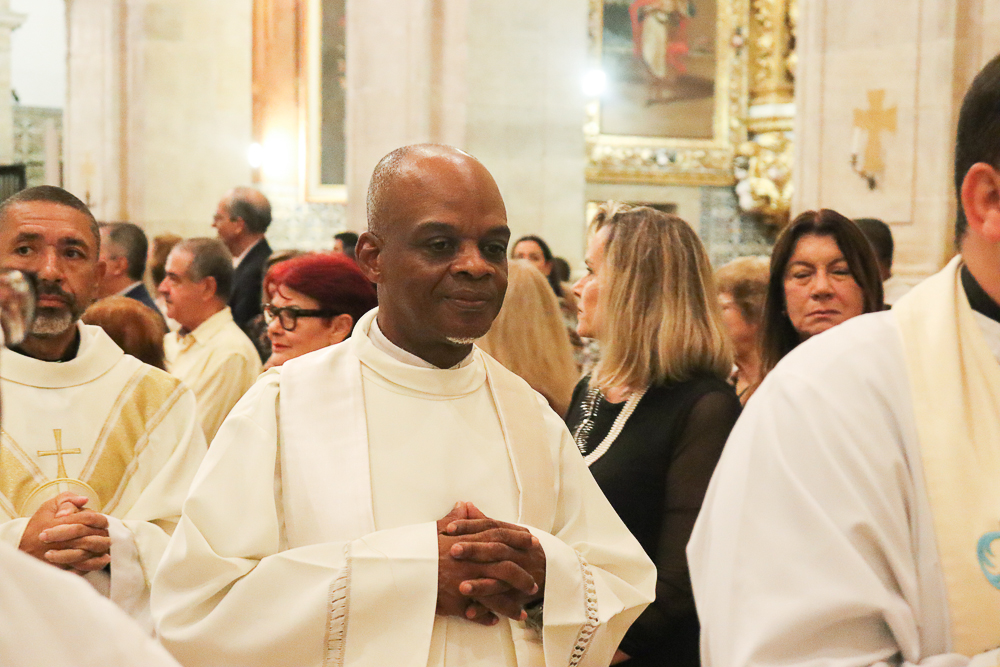

Padre Miguel Santos
Idade: 45 anos
Personalidade: Carismático e acolhedor
Pastor Tiago Oliveira
Idade: 38 anos
Personalidade: Energético e envolvente

Imã Ibrahim Al-Mansour
Idade: 50 anos
Personalidade: Sereno e sábio

Monja Akira Saito
Idade: 30 anos
Personalidade: Calma e introspectiva

Rev. Sarah Thompson
Idade: 42 anos
Personalidade: Amigável e inclusiva
Rabino David Levy
Idade: 55 anos
Personalidade: Engraçado e acessível
Comentário do casal: "Padre Miguel transformou nossa cerimônia em um encontro abençoado, onde cada palavra ressoava como um voto de fé e amor eterno."